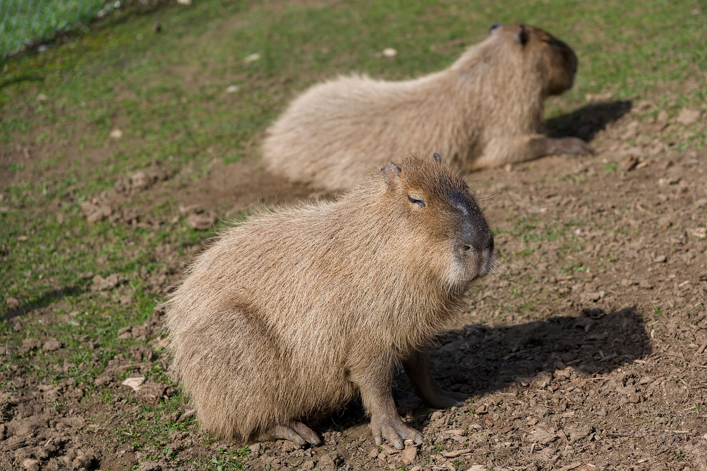
Capivara
Es común cerca de rios y lagunas de Brasil. Es un roedor muy grande.
Ejercicio de etiquetas semanticas
En este ejercicio uso header, nav, main, section, article, figure y footer. Hay cinco grupos de animales y varios ejemplos.
Muchos tienen pelo y cuidan a sus crías.

Es común cerca de rios y lagunas de Brasil. Es un roedor muy grande.
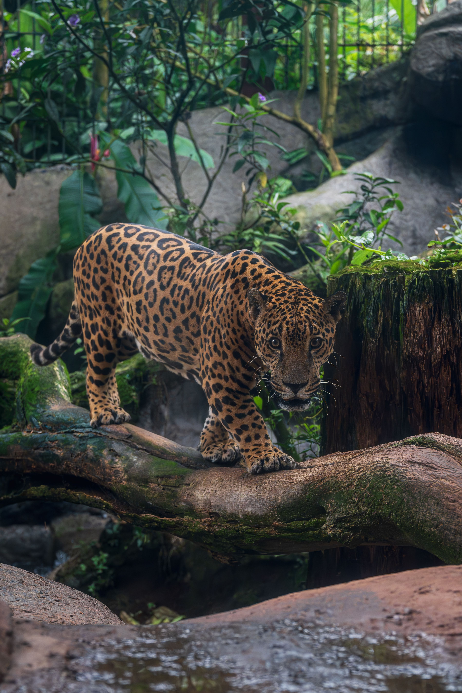
Este felino vive en varios biomas como el Pantanal. Tiene manchas negras.
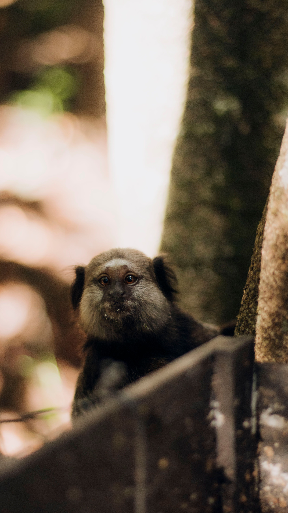
Es un pequeño primate que habita la Mata Atlántica de Brasil.
Tienen plumas y muchas pueden volar.
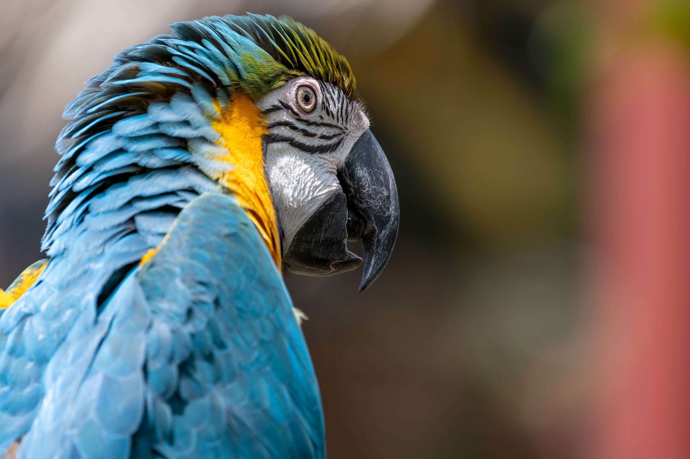
Es un ave de color azul y pico fuerte. Se puede encontrar en Brasil.
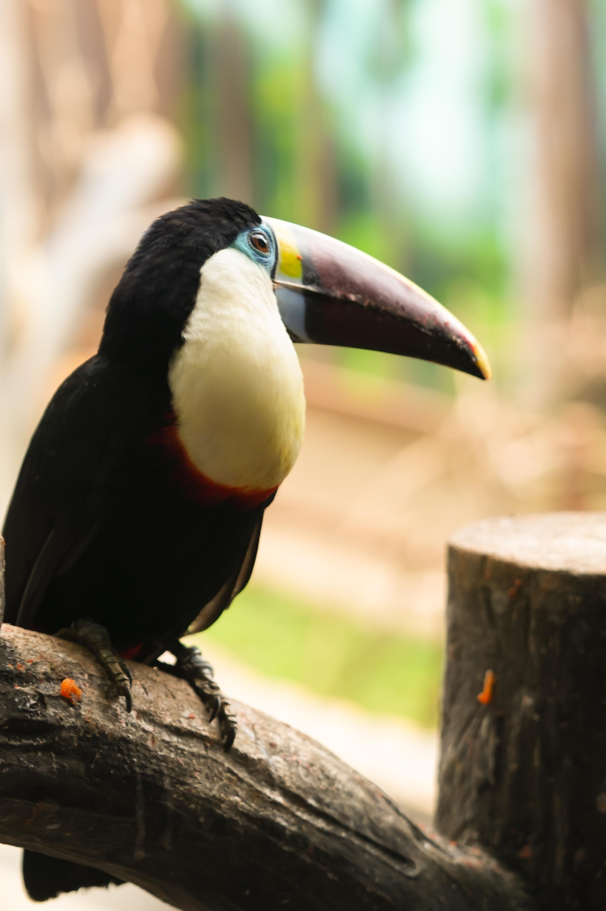
Su pico es bastante grande. Come frutos y otros alimentos.
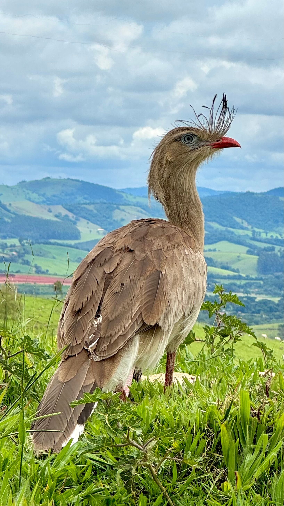
Es un ave terrestre que se puede ver en zonas abiertas.
Viven en agua y respiran usando branquias.
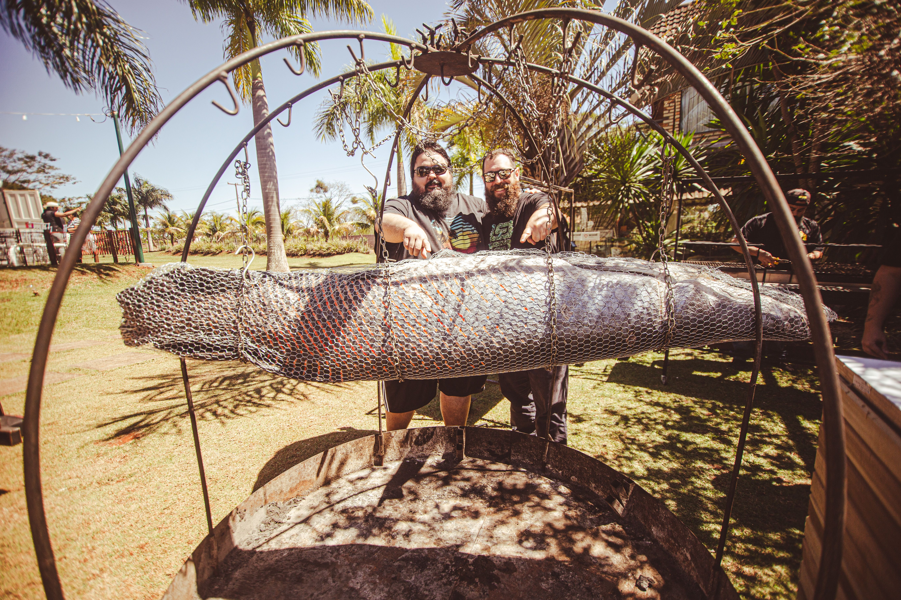
Es un pez grande de agua dulce, conocido en la Amazonia.
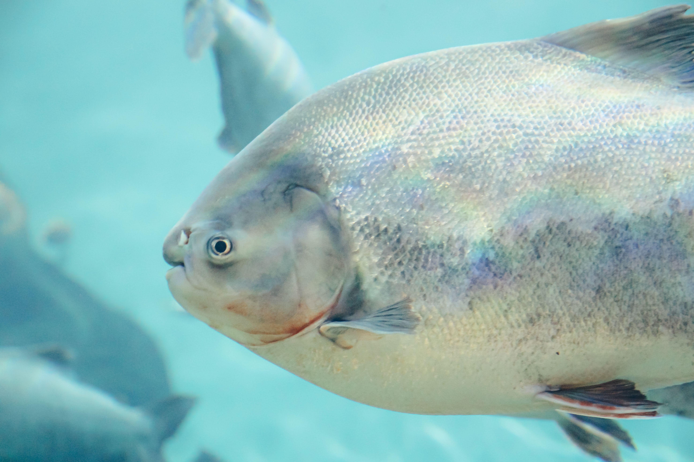
Es un pez de rios amazónicos y se alimenta también de frutos.
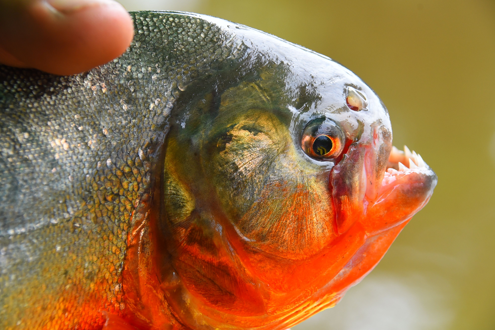
Es un pez de agua dulce con dientes afilados.
Muchos pasan parte de la vida dentro y fuera del agua.
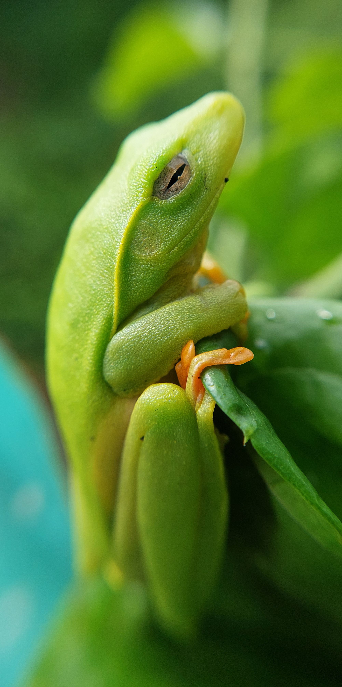
Es un anfibio pequeño que suele trepar por plantas.
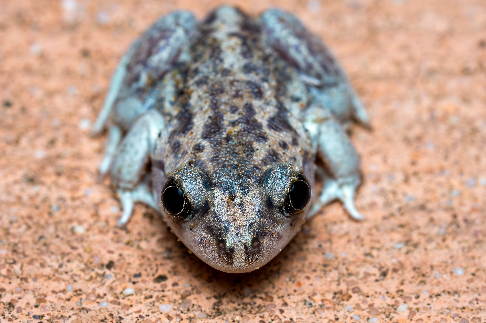
Un sapo conocido en varias zonas de Brasil.
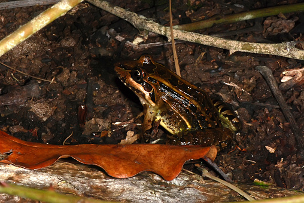
Es un tipo de rana que habita zonas húmedas.
Tienen la piel cubierta de escamas o placas.
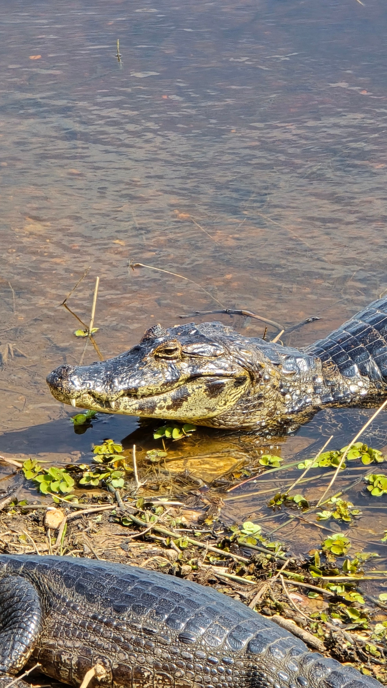
Vive cerca de rios y pantanos, por ejemplo en el Pantanal.
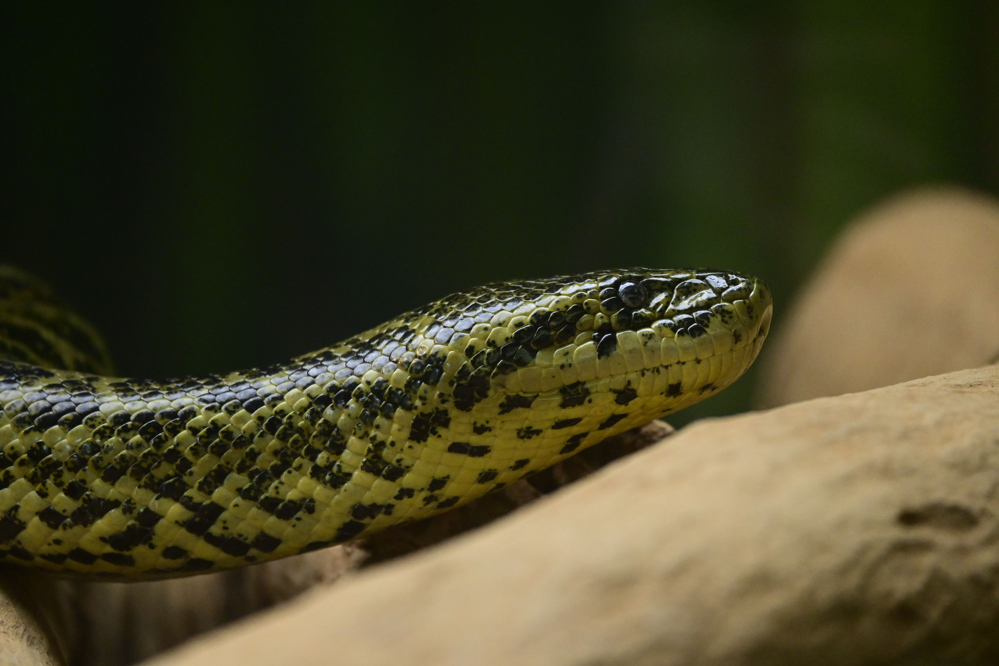
Es una serpiente grande que pasa mucho tiempo en el agua.
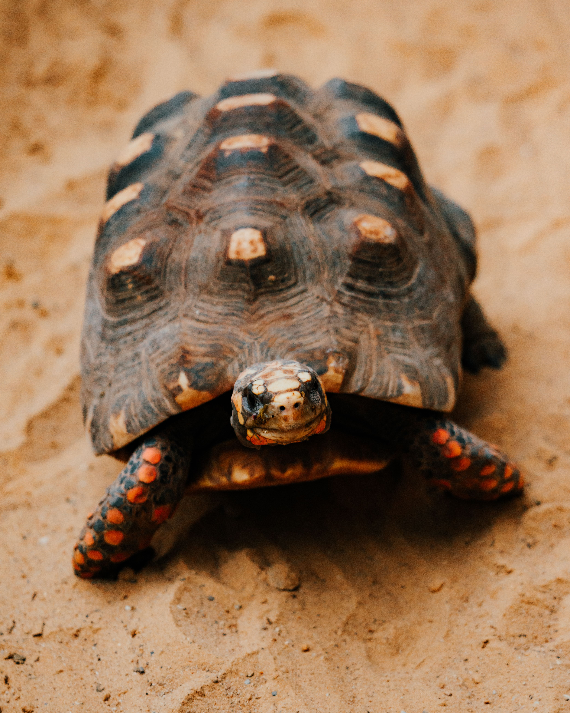
Es una tortuga terrestre que vive en regiones cálidas.